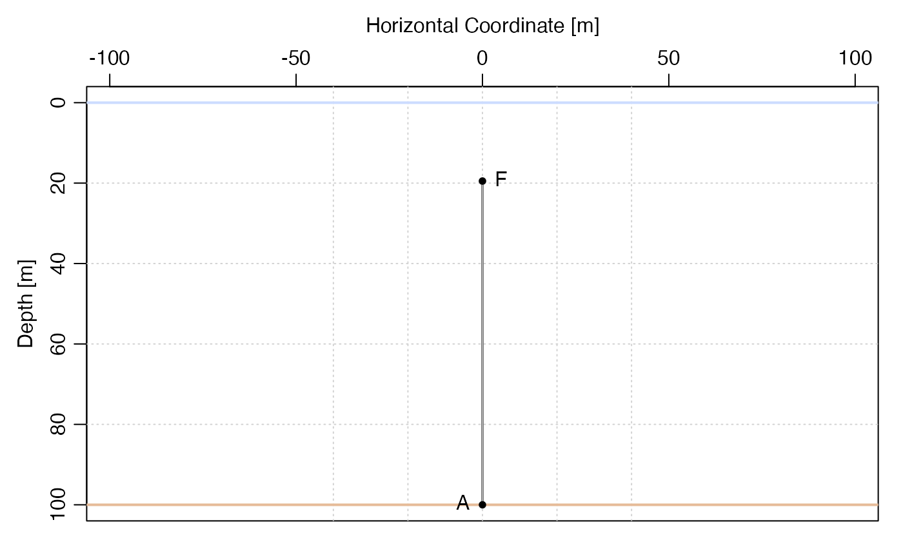

knockdown.RdThe current may be a depth-independent or depth-dependent,
as specified by the v argument.
knockdown(m, u = 1, debug = 0L)
| m | an object of the |
|---|---|
| u | either a non-negative number indicating depth-independent velocity,
or a function that returns that velocity as a function of the vertical
coordinate. For the second case, note that the vertical coordinate is
defined as height (in m) above the sea surface, so that e.g.
|
| debug | an integer controlling debugging. The default value of 0 means to work silently. Use a positive value to cause the function to print some information about intermediate results. |
Dan Kelley
library(mooring) m <- anchor(depth=100) + wire(length=80) + float("HMB 20") md <- discretise(m) mdk <- knockdown(md, u=1) plot(mdk)#>#>#> [1] 0.50800000 1.50800000 2.50800000 3.50800000 4.50800000 5.50800000 #> [7] 6.50800000 7.50800000 8.50800000 9.50800000 10.50800000 11.50800000 #> [13] 12.50800000 13.50800000 14.50800000 15.50800000 16.50800000 17.50800000 #> [19] 18.50800000 19.50800000 20.50800000 21.50800000 22.50800000 23.50800000 #> [25] 24.50800000 25.50800000 26.50800000 27.50800000 28.50800000 29.50800000 #> [31] 30.50800000 31.50800000 32.50800000 33.50800000 34.50800000 35.50800000 #> [37] 36.50800000 37.50800000 38.50800000 39.50800000 40.50800000 41.50800000 #> [43] 42.50800000 43.50800000 44.50800000 45.50800000 46.50800000 47.50800000 #> [49] 48.50800000 49.50800000 50.50800000 51.50800000 52.50800000 53.50800000 #> [55] 54.50800000 55.50800000 56.50800000 57.50800000 58.50800000 59.50800000 #> [61] 60.50800000 61.50800000 62.50800000 63.50800000 64.50800000 65.50800000 #> [67] 66.50800000 67.50800000 68.50800000 69.50800000 70.50800000 71.50800000 #> [73] 72.50800000 73.50800000 74.50800000 75.50800000 76.50800000 77.50800000 #> [79] 78.50800000 79.50800000 80.50800000 0.08456582#>#>#>#>